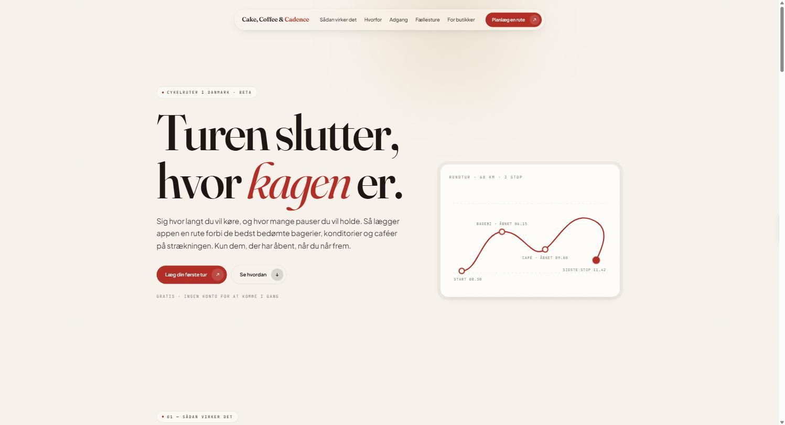
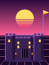
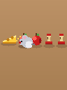
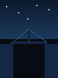
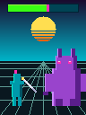
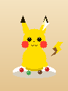

Besides the medicine, I build the things I wish existed.
Most of my week goes to gastroenterology, research and running GAIN. The rest of it sometimes ends up here. Something annoys me, I build the thing that fixes it, and I take it the whole way — sketch, interface, code, infrastructure, a domain of its own. Nobody asked for any of these. People use all four anyway.
01 / Route planning
ccc-bike.comCake, Coffee
& Cadence
The ride ends where the cake is.
Say how far you want to ride and how many stops you want to make. The app builds a route through Denmark past the best-rated bakeries, patisseries and cafés on the way — and only the ones that are still open by the time you actually get there.
- Loops or point-to-point, with ferry, train and bus transfers between waypoints
- Arrival times computed from your average speed and pause length, then matched against real opening hours
- Curated Danish index of bakeries, patisseries, cafés, tea houses, ice cream and chocolate
- Saved routes, group rides and a shop-facing side — free, no account needed to start

02 / Project management
orbitproject.appOrbit
Keep every journey on track with clear check-ins.
Most project tools nag you about deadlines. Orbit asks you to check in. Each project carries a check-in threshold and a health score, so a project going quiet is visible long before it is late — and everything syncs live across every device you own.
- Projects with check-in thresholds and health scoring; tasks with priorities, reminders and repeats
- Rich task descriptions in Markdown — paste images, attach files up to 25 MB
- Shared journeys: invite collaborators, group chat per project, 1-on-1 direct messages, buddy network
- Real-time notification centre with deep-linking, plus browser push notifications
- Community ideas board — users submit, vote and discuss feature requests
Orbit
Keep your projects on track.
03 / Focus
bobbylo.dk/timerPixel Timer
Twenty-five minutes of work. One boss fight.
A focus timer where the countdown is rendered as a battle. A knight chips away at a monster's HP bar as your session runs; finish the session and the monster falls. Every sprite is generated programmatically from Python art scripts, frame by frame, in this repository.
- Six playable pixel themes — castle siege, dragon sleep, canyon bridge, monster HP, Poke feast and mouse timer — with more still locked in the picker
- Installable as a PWA with a service worker: works fully offline, launches like a native app
- Sprite sheets and frame maps generated in Python, not drawn by hand
- Respects reduced-motion, with an accessible on-screen HP readout





04 / Games
bobbylo.dk/raceGoldstar Runner
Finish the chore. Feed the star. Beat the fire.
A racing game for children, built to make tasks at home feel like a fighting-game tournament. Everyone picks a fighter from the roster, then earns gold stars by finishing real tasks off-screen. Each star pushes your runner further down the track — and when the clock hits zero, a wall of fire sweeps everyone who has not crossed the line.
- Fighter-select screen: drag your player coin onto a card to lock in, complete with announcer callout
- Up to ten players racing in parallel lanes with a shared countdown
- 34 animated characters and 20 parallax backdrops, all sprite-sheet driven
- Adjustable star target and time limit, so the difficulty matches the chore
Got an idea? Let’s build it.
Every app above started as somebody being mildly annoyed about something, and I do the whole build myself — the design, the code, the infrastructure, the launch, and the maintenance nobody warns you about. If there is something you keep wishing existed, bring it. I would much rather make the thing with you than have another meeting about it.
Designed, not assembled
Each one gets its own type, palette and motion, drawn from scratch. No template, no component kit, no house style borrowed from somewhere else.
Built end to end
React and TypeScript where they earn their keep, plain JavaScript where they do not. Firebase, Firestore and service workers doing the work underneath.
Actually shipped
Custom domains, real deployments, installable web apps, mobile builds — and the unglamorous part that starts the day after launch.
Kept running
Automated data pipelines, scheduled jobs and LLM-assisted tooling — the same plumbing I rely on for research, pointed at something more fun.
You bring the idea, I will bring the build. Get in touch.